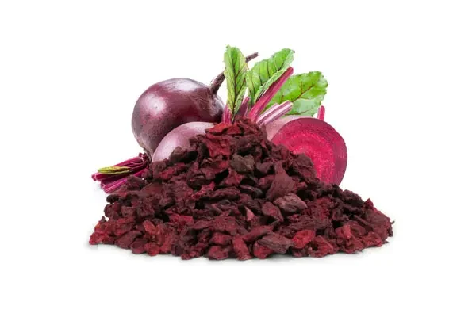
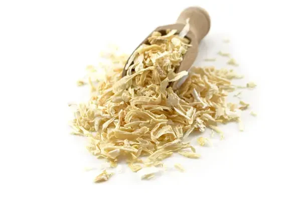

بنجر مجفف
مكوّن خضري مجفف؛ يُحدد الشكل والحجم المطلوبان.
ملف المنتج ↗تصفح المنتجات المجففة، والأشكال المتاحة للاستفسار، ومتطلبات التوريد والمواصفات لدى فيردليف.
حجم القطع والرطوبة واللون ومتطلبات إعادة الترطيب.

مكوّن خضري مجفف؛ يُحدد الشكل والحجم المطلوبان.
ملف المنتج ↗
مكوّن مجفف للتوابل والأغذية؛ استفسر عن طريقة التجهيز والحجم.
ملف المنتج ↗
مكوّن خضري مجفف للتوابل وتصنيع الأغذية.
ملف المنتج ↗
مكوّن حمضي مجفف لخلطات النكهات؛ يتم تأكيد طريقة التجفيف والشكل المطلوب.
ملف المنتج ↗